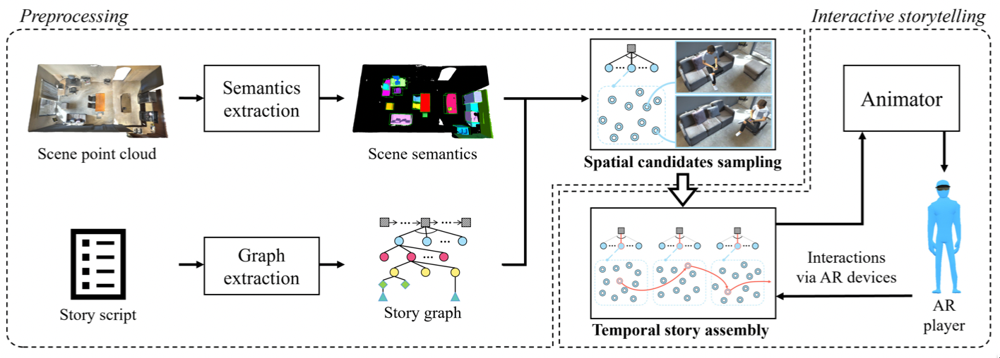
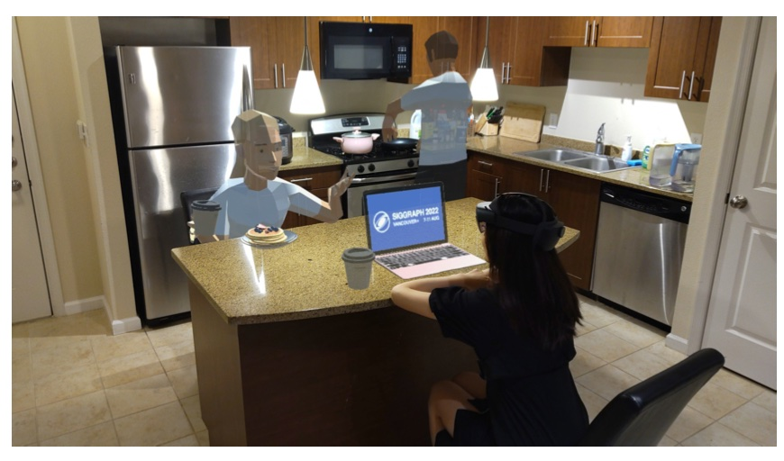
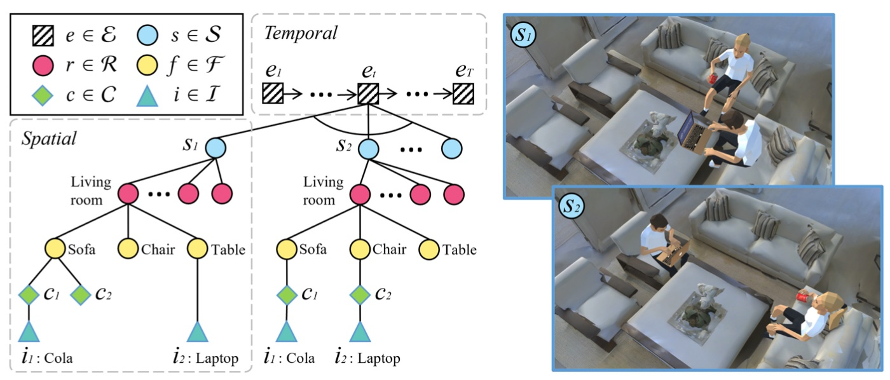
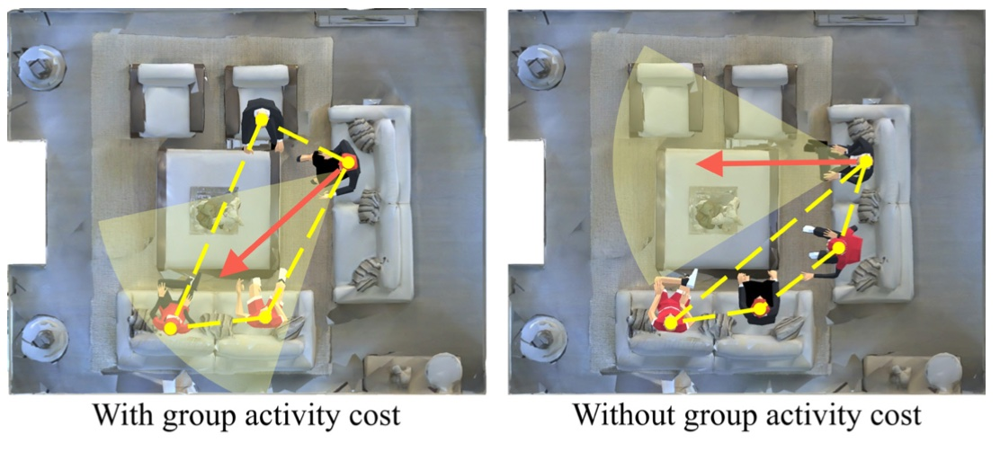
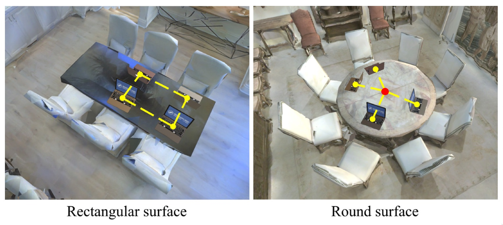
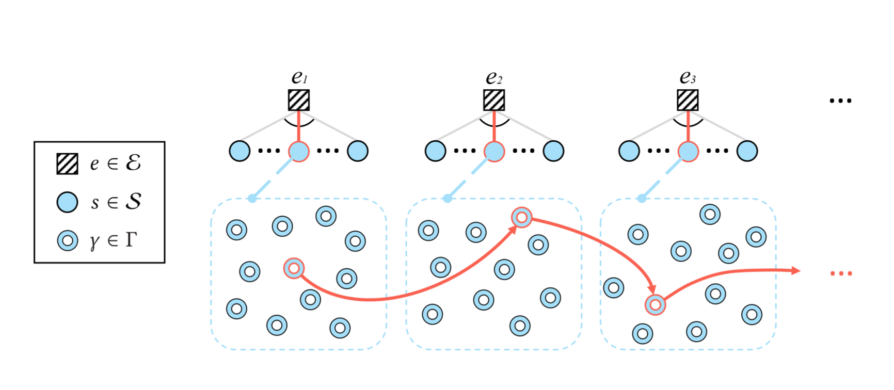
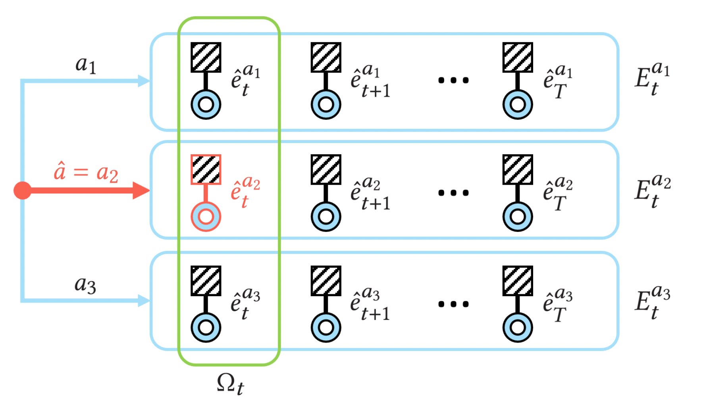
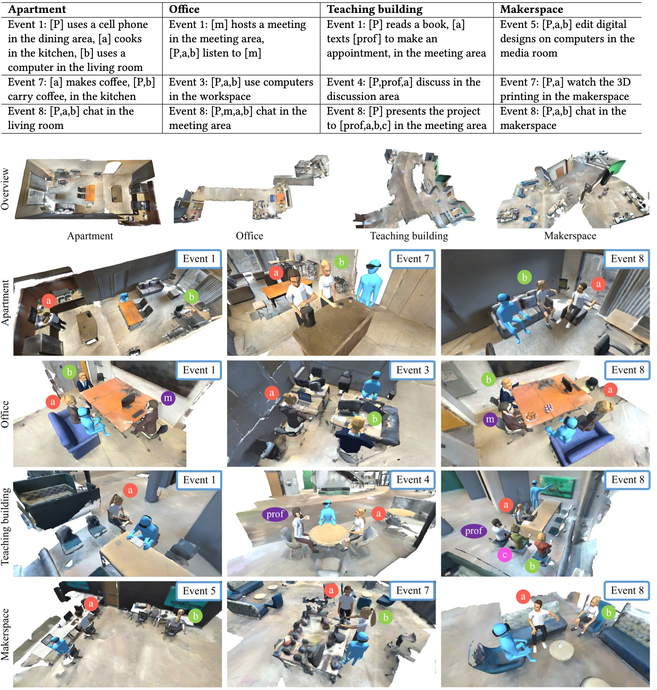
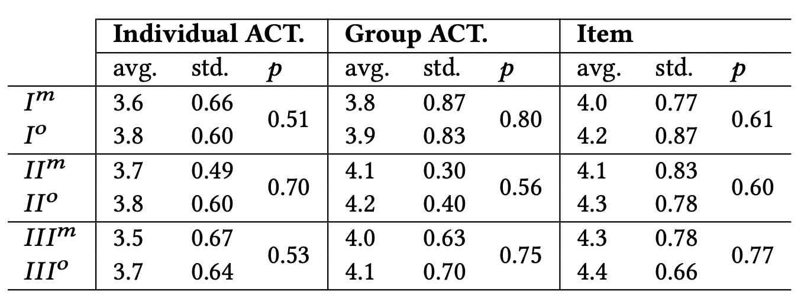

Interactive Augmented Reality Storytelling Guided by Scene Semantics
Changyang Li, George Mason University
Wanwan Li, George Mason University and University of South Florida, USA
Haikun Huang, George Mason University, USA
Lap-Fai Yu, George Mason University, USA
Speakers notes go here.
background
• AR enhances real world experiences with virtual content
• growing trend is to leverage scene semantics and user behavior to elevate AR experiences
How do we tell novel interactive AR stories
involving virtual agents objects, and events
in real scenes while utilizing scene layouts
and user semantics?
challenges
(1) How to position and pose the virtual contents
(2) How to choose an optimal solution to accommodate the story event contexts
(3) How to ensure the temporal coherence between the events of a story
(4) How to adapt the same story to different real-world environments
(1) How to position and pose the virtual contents. A specific difficulty with AR storytelling is that multiple virtual characters or objects might interact with each other, thus their positions and poses should be considered jointly
(2) How to choose an optimal solution to accommodate the story event contexts. For example, between multiple chairs in a scene, which chair should a virtual character choose in an event?
(3) How to ensure the temporal coherence between the events of a story. Since a story happens chronologically, how to instantiate a story in a scene should not only consider spatial relations at a certain event, but also temporal relations between events at different time frames
(4) How to adapt the same story to different real-world environments.
contributions
(1) novel problem of interactive AR storytelling involving virtual characters, items, and events, considering scene layouts and semantics
(2) heirarchical story sampling approach that adapts story events to the player's dynamic behaviors in a real environment
(3) validation of approach through AR experiments and a user study
• We propose novel problem of interactive AR storytelling involving virtual characters, items, and events to take place in different real scenes, considering scene layouts and semantics.
• We propose a hierarchical story sampling approach that adapts story events to the player's dynamic behaviors in a real environment. By sampling spatial candidates followed by story assemblies with temporal considerations, our approach supports interactive update of the story at runtime, enabling the player to participate as a character in AR storytelling.
• We validate the effectiveness of our approach by conducting AR experiments and a user study in real scenes.
overview
takes an abstract story description & target scene as inputs, and animates a story according to player's interaction with the scene and virtual characters
preprocessing → interactive storytelling
[read top text]
There are two stages: the preprocessing and the interactive storytelling

An overview of the approach. In the preprocessing phase, scene semantics are extracted in a semi-automatic manner, and meanwhile a story graph is extracted from an input story script. A spatial candidates sampling process prepares a set of candidate AR content poses within each event locally. In the interactive storytelling process, the AR player keeps interacting with the AR contents at each event, and such interactions are passed as an input to the story assembly module for picking optimal spatial candidates for the following events adaptive to the player's actions.

The approach automatically poses AR contents based on scene semantics. This example shows an event in a kitchen with a human player participating as a character in the story, interacting with virtual characters.
raw story scripts
b = (character, activity, room)
↳ tuple describing state of character in event
E = {ek}k=1,2,...,T
↳ a raw story E is a set of all event frames (T)
ek = {bc}
↳ event frame is a set containing the state bcof each character c

A story graph representation. A story graph consists of a sequence of event graphs. Each event graph Ge is rooted at its corresponding event node e. Each event graph comprises multiple spatial graphs. Each spatial graph SG, rooted at a nodes, contains the high-level spatial relations between the virtual characters C, virtual items I, and the furniture objects F in a room r € R. Instantiating a spatial graph with position and orientation attributes of the characters and items generates a spatial candidate. The two scenes on the right show the virtual characters and objects set using two spatial candidates of the spatial graphs rooted at si and s2, respectively. Instantiating an event refers to selecting a spatial graph and generating a spatial candidate of this spatial graph.
heirarchical story sampling
(1) spatial candidates sampling: considers spatial constraints within each spatial graph SG for generating spatial candidates
(2) story assembly: uses the generated spatial candidates to assemble a story solution considering temporal constraints and dynamic player actions.
Since a story is described in the tangled spatial and temporal domains, the overall search space can be large and sparse. It can be difficult to sample a story solution efficiently by directly modeling the whole story as a single configuration, especially when there multiple events that contain long temporal constraints, and when there are multiple virtual characters participating in a single event with complicated spatial constraints.
spatial candidate sampling
cost function parameters:
• individual activity
• group activity
• character pose
• item placement
The authors devised a cost function to evaluate whether virtual characters and items are reasonably placed and posed in an event. The parameters considered are the following:

Example group activity results in a chat event. In each case, the yellow points and dashed lines form the group convex hull. The yellow region and red vector indicate the field of view and head forward direction of the upper-right character.

Placing items on a rectangular or a round surface
story assembly
using sampled spatial candidates, the story assembly stage dynamically assembles a story during the AR runtime to fit with player behaviors
Using the sampled spatial candidates for the spatial graphs, the story assembly stage dynamically assembles a story during the AR runtime to fit with the player’s behaviors and the environment

During story assembly, for each event 𝑒, an event instantiation is selected, which comprises a selected spatial graph (rooted at a node 𝑠) together with its instantiation (i.e. a spatial candidate 𝛾 ). Red colors refer to the selected spatial graphs and spatial candidates of an assembled story.

An illustration of dynamic story assembly at event frame 𝑒𝑡 . Event instantiations (𝑒ˆ𝑡𝑎 ) are precomputed for all possible player actions 𝑎 ∈ 𝐴 in this event and saved in the buffer Ω𝑡 , and one is picked for animation based on the estimated action 𝑎ˆ at runtime. Red color denotes the estimated action and selected event instantiation.

Descriptions of the selected events of the four stories in different indoor scenes. [P] denotes the AR player; [m] denotes the manager; [prof] denotes the professor; and others are general characters without specific roles.
user study
• hololens 2
• 30 participants
• apartment, office, classroom, and makerspace scenes
• manually designed experience vs. author's framework

Quantitative results of participants’ ratings on the plausibility of individual activity (individual ACT.), group activity (group ACT.) and item placement (item), including the average (avg.), standard deviation (std.) and 𝑝 value. 𝐼𝑜, 𝐼𝐼𝑜 and 𝐼𝐼𝐼𝑜 were synthesized by our approach. 𝐼𝑚, 𝐼𝐼𝑚 and 𝐼𝐼𝐼𝑚 were created by designers
summary
• authors present a novel interactive AR storytelling approach guided by indoor scene semantics and user interaction
• user study validates effectiveness of the approach for AR storytelling in different environments